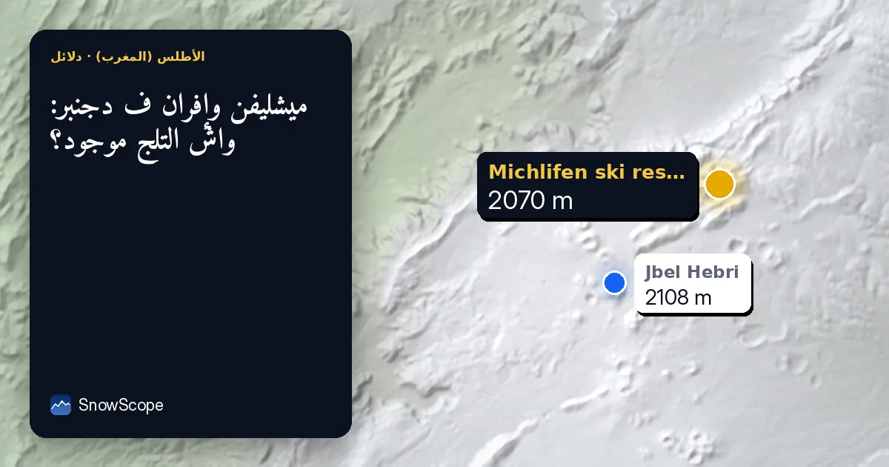

ميشليفن وإفران ف دجنبر: واش التلج موجود؟
فـ 46 شتا ديال التسجيلات، Michlifen فـ منتصف دجنبر غالبا مافيهاش تلج ديال الكي. غير فـ سنين نادرة كتبقى التلج على الأرض بزاف باش تكون مهمة. هادا المحطة لـ الناس اللي كيتبعو الزوبعات، مافيش للناس اللي كيخططو جماعة أسبوع من قبل.
شوف توقعات التلج مباشرة ديال Michlifen ski resort فالتطبيق ديال SnowScopeالعلو ديال التلج، التنبيهات والخريطة 3D، فابور.
واش Michlifen كيعاني فـ دجنبر
Michlifen دالت فـ أطلس ديال المغرب فـ ارتفاع منخفض لـ محطة ديال التلج: القاع دالت فـ 1870 م، منتصف الجبل فـ 1970 م، والقمة فـ 2070 م. غير 13 كم بعيدة، Ifrane غالبا دالت تحت التلج الحمين، بـ لكن بيستات ديال Michlifen كتقول حديتا ثانية. الجبال هنا كتاخد التلج بزاف لـ لاكن كتفقدو بسرعة لـ السيالة والريح.
الارتفاع فـ أطلس مافيش مهم بزاف حتى فـ السلاسل الأوروبية. اللي مهم بزاف هو التوقيت: واش كتقع التلج و واش الشمس كتاكل بـ سرعة. فـ دجنبر، الشمس منخفضة بـ لاكن قوية بزاف باش تسحب الغطاء الرقيق فـ أيام.

الصورة ديال دجنبر فـ تلاتة ارتفاعات
فـ منتصف الجبل (1970 م)، 15 دجنبر كتبين 0 سم فـ شتا عادية. حتى فـ دجنبر جواد—شتا واحدة من عشرة—كتاخد غير 5 سم. فـ 31 دجنبر، شتا عادية بقات فـ 0 سم، بـ لاكن دجنبر الكبير كتوصل لـ 17 سم. الجزء الحزين: 83 % ديال الشتوات بقات غالبا عريانة (أقل من 5 سم) فـ ليلة رأس السنة.
الموضوع أسوأ فـ القاع و متشابه فـ القمة. أول التلج اللي كيبقى غالبا كيوصل حول 14 دجنبر، بـ لاكن الكلمة 'بقى' كتعطي انطباع كاذب: دجنبر عادي كتجيب غير 24 يوم فـ التلج على الأرض. بزاف من الأيام ديك كتجي فـ رشقات قصيرة بين فترات السيالة.

واش التلج الأحسن كيوصل
الشتا اللي فاتت (2025-26) كسرت الموضوع. فـ يوم الميلاد 2025، منتصف الجبل كان عندو 50 سم—حنا ندير كي فـ البيست. الموسم وصل لـ 51 سم فـ 48 يوم ديال التلج. Jbel Hebri اللي قريب كمان حمل بزاف مع 48 سم فـ يوم الميلاد، بـ لاكن شتا عادية هناك كتعد غير 20 يوم ديال التلج.
الشتوات ديك كتكون من الندرة. واش كتجي، كتجي بسرعة: نظام الزوبعة دالت فـ أطلس، كتدعي التلج الثقيل، والقاع كيبني بسرعة. بـ بعدين الجو كينقل. الفرق بين دجنبر عرياني و واحد كيمكن نديرو كي غالبا كيعتمد على زوبعة واحدة كتوصل.
Michlifen مقابل الأرض اللي أعلى
Oukaïmeden، دالت أعلى بزاف فـ نفس السلسلة، أحسن لـ زيارة ديال دجنبر. فـ منتصف الجبل ديالها (2929 م)، 15 دجنبر عادي كتعطي 16 سم، و 43 % ديال الشتوات عندهم الأقل 25 سم بحال هادا الوقت. منتصف الجبل ديال Michlifen فـ نفس التاريخ 0 سم، مع غير 2 % ديال الشتوات كتوصل لـ 25 سم.
حتى Oukaïmeden كتكون راهن فـ دجنبر. بـ لاكن الفرص كتلتفت بزاف باش إلا كنت مجبور تديري الكي من بدري، المحطة اللي أعلى تكون الخيار الأكيد. Michlifen كتكون معقولة غير إلا كنت كتقدر تتحرك بسرعة بعد التلج الجديد.
واش 46 شتا اللي فاتو كتعلمنا
المعطيات كتغطي 1980-81 لـ 2025-26 و ما كتبين نقل طويل المدى. أسوأ دجنبر فـ السجل جاب 9 سم ديال التلج الأقصى فـ منتصف الجبل. الأحسن جاب 80 سم. الوسط دالت 31 سم، بـ لاكن الرقم ديك كتخبي الحقيقة: بزاف سنين رقيقة، شوية سنين غميقة، و دجنبر منقسم بينهم.
دجنبر من البدري (قبل 15 دجنبر) أرقع من دجنبر من الآخر. فـ 25 دجنبر، السنين الجواد كتبقى أكتر شيوعا. فـ ليلة رأس السنة، الفرص لـ ديك 25 سم أو أكتر كتولي 7 %. إلا عندك مجال، بطال لـ 25 دجنبر أو يناير الأول أحسن من الحجز من البدري.
واش نديرو مع المحطة ديالها فـ الشتا
القوة الحقيقية ديال Michlifen كتجي بعد أول الزوبعات الكبار ديال يناير أو فبراير. هادا الوقت القاع كيبني و كيبقى. إلا كنت بغيتي تزوري فـ دجنبر، شوف الموضوع حتى فابور: شوف الجو، شوف نظام الزوبعة كيتكون، و رول فـ يومين أو تلاتة ديال التلج الثقيل. جيب الإطارات ديال الشتا و شوف أحوال الطريق قبل ما تخرج.
لـ تجربة ديال Ifrane اللي فـ الطابع، يوم أو يومين بعد الزوبعة غالبا كتدعي. التلج جديد، الواد أبيض، و أطلس كيخرج نفسو بـ أحلى شي. بـ لاكن الحساب على هادا فـ دجنبر كتكون الأمنيات كاذبة. خطط ليناير فـ قدام، أو تبع الزوبعات على الجو.
نصايح للي كيتزلجو
- شوف الجو لـ الزوبعات، مافيش الجدول. الزيارة ديال دجنبر كتشتغل غير إلا التلج كيقع فـ النافذة ديالك. بقا فـ 48 ساعة بعد التلج الثقيل باش تاخد الأحسن.
- دجنبر فـ Michlifen كتكون الكي نادر. إلا القاع كتبين الأرض العريانة أو الغطاء الرقيق على الخريطة ديالنا، متحجزش. إلا تشوف التلج الجديد، تحرك بسرعة.
- الطرق فـ أطلس كتجمد بسهولة بعد التلج، خاصة فـ الصبح. جيب الإطارات ديال الشتا و شوف الأحوال قبل ما تطلع فـ الجبل.
- لـ الرحلة ديال دجنبر اللي أكيدة، شوف Oukaïmeden بدل. التلج فـ منتصف دجنبر هناك أكتر احتمالا، بـ لاكن بزا مافيهاش الضمان.
- يناير من البدري و فبراير أكتر توكل. خطط الرحلة الكبيرة ديالك لـ هنا، و شوف التلج ديال دجنبر حتى فـ الحظ الحسن، مافيش الوعد.
على هاد الأرقام
العلو ديال التلج فالمحطات هو أكثر تلج فالجهة الفوقانية فالتاريخ المكتوب؛ هادو تقديرات لمنطقة، ماشي قياس فنقطة وحدة. التوقعات يمكن تتبدل. ديما شوف النشرة الرسمية ديال الانهيارات قبل ما تخرج من البيست.
كيفاش تستاشهد بهاد المقال
للبحث، التعليم ولا الصحافة: الأرقام والرسومات تقدر تعاود تخدم بيهم بحرية تحت CC BY 4.0 مع هاد الاستشهاد.
SnowScope (2026), ميشليفن وإفران ف دجنبر: واش التلج موجود؟, https://snowscope.app/blog/ar/2026/11/michlifen-ifrane-neige-decembre-moyen-atlas.html, تشاف ف 2026-11-14
SnowScope (Atlas Labs). (2026, November 14). ميشليفن وإفران ف دجنبر: واش التلج موجود؟. SnowScope snow reports. https://snowscope.app/blog/ar/2026/11/michlifen-ifrane-neige-decembre-moyen-atlas.html
BibTeX
@misc{snowscope2026michlifenifraneneigedece,
author = {{SnowScope (Atlas Labs)}},
title = {ميشليفن وإفران ف دجنبر: واش التلج موجود؟},
year = {2026},
month = nov,
howpublished = {\url{https://snowscope.app/blog/ar/2026/11/michlifen-ifrane-neige-decembre-moyen-atlas.html}},
note = {Published 2026-11-14 13:29 UTC; accessed 2026-11-14}
}· CC BY 4.0 · الطريقة، الداتا والأدوات →
Michlifen ski resort: التلج والحرارة حسب العلو، هاد الشتا مقارنة مع اللي فاتت (الأدوات) →
تابع Michlifen ski resort
فابور: ميساج ملي يجي التلج، والتوقعات كل صباح.
تقارير أخرى ديال التلج

التلج كاتتراجع لأعلى القمم فالأطلس. المحطات التلاتة ماعندهمش تلج اليوم؛ 40 كم² ديال القمم كاتبقى بيضة. المزيد ديال الذوبان جاي.

بغاو 8 سم غاع من التلج على أعلى القمم ديال الأطلس اليوم. ماشي فاين شي تلج في حتا محطة. الغطا كايتقلص بزاف فالنص ديال نونبر.

محطات الأطلس ديال التزلج ماعندهومش تلج اليوم. غير 80 كم² من الأرض البيضاء باقية على الذروات العالية، والعمق الأعظم فيهم هو 9 سم. البيانات من 7 نونبر.